How to install ecourt and tomcat on a Windows Server
Create a folder with your initials in the eCourt Installs Directory (E:\Ecourt Homes) on the Web server if one doesn't already exist.
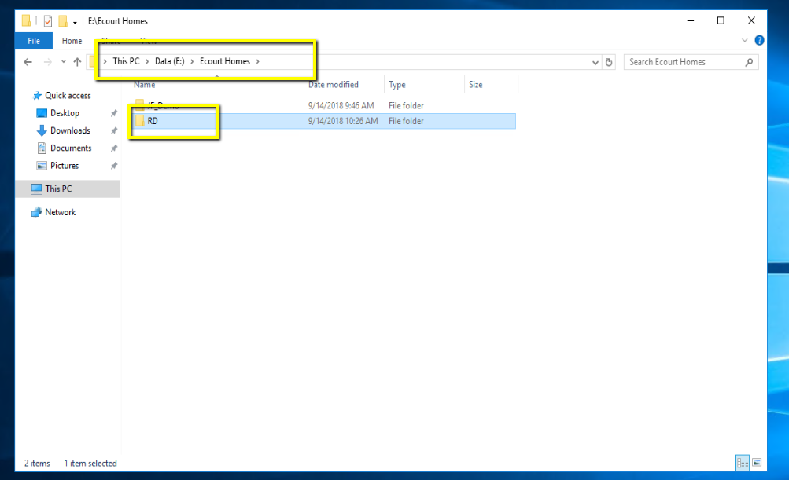Create a folder with the agency name, or test name, in that directory.
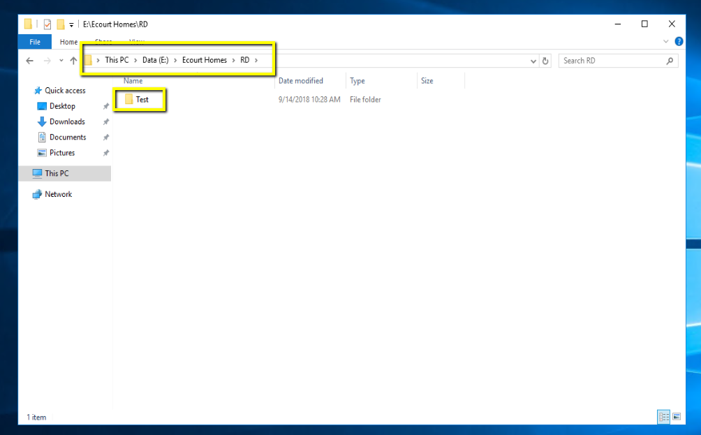Within that folder, create another folder called “ecourt”
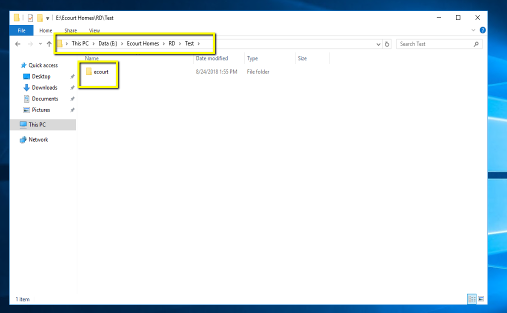Create a file called “cmsuser.properties” in the ecourt directory
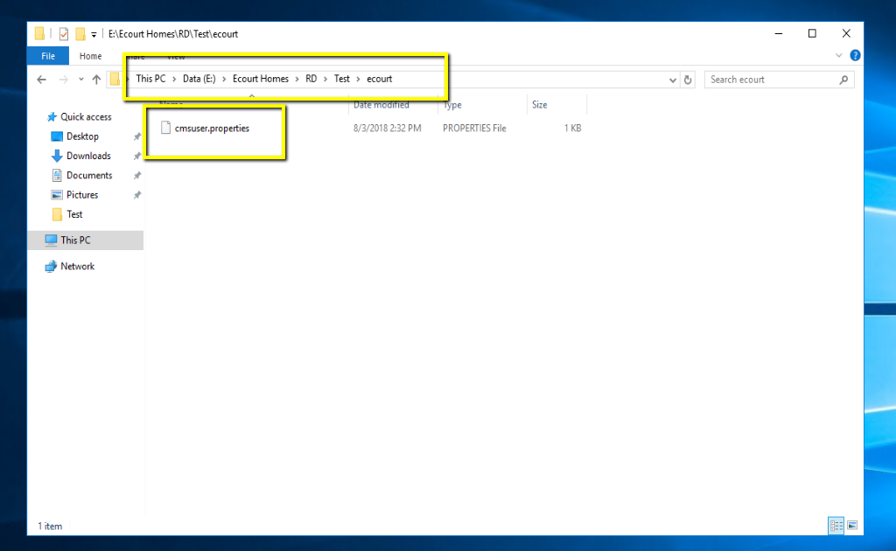Open the cmsuser.properties file in notepad++ (or notepad) and add the following lines:
db.url=jdbc:jtds:sqlserver://ServerName:1433;databaseName=DatabaseName;sendStringParametersAsUnicode=false;maxStatements=2147483647
db.user=ecourt
db.password=dbpass
db.schema=ecourt
Replacing ServerName and DatabaseName with the name of the server (typically zombie) and the name of the database on that server.
Note: If you're intalling on a customer server, the user and password may be different.
Note: More information on the cmsuser.properties file will be available in the next guide.
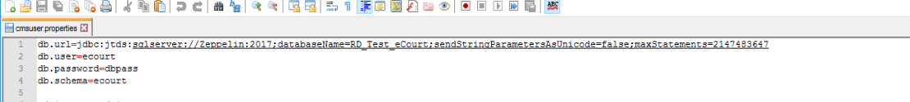Launch a Tomcat installer (version 8.5 is the best bet for current versions). You can find these by visiting the tomcat page, here, or in E:\eCourt Install Stuff if you're installing on the ACDC server.
Note For a windows server, you'll want to download the windows 32/64 msi installer.
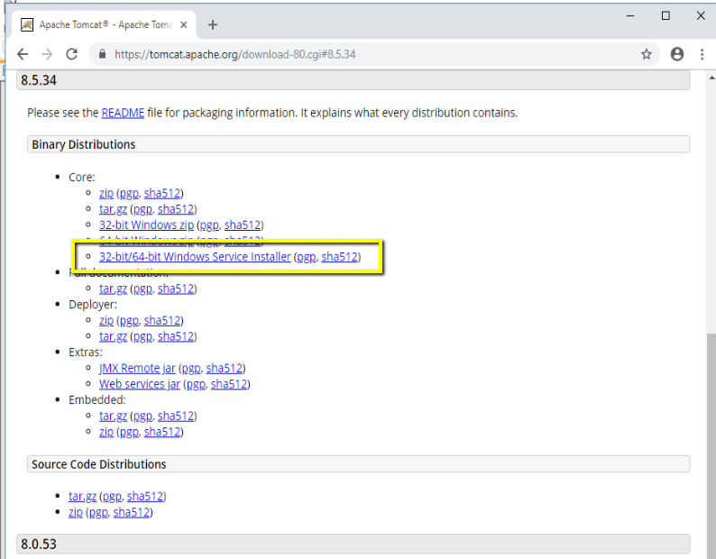Click next on the first page
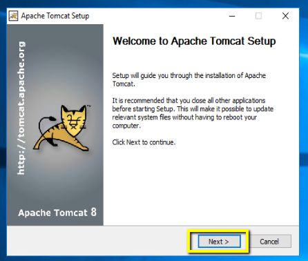click I Agree on the 2nd page
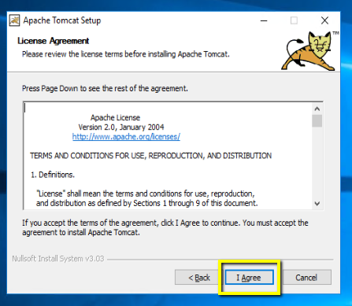Leave the default selection the the 3rd page, and select next
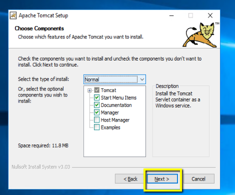Choose your next avaliable ports in your assigned range. If you're not sure what your assigned range is check here. If you don't have ports assigned to you, message a Solutions Architect to get a port range assigned to you.
You should also update the Windows Service Name to be your initials + the name of the folder you created earlier.
Once everything is updated, click next.
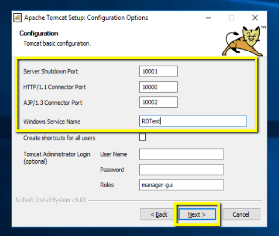Note if you're unsure about what is currently in use in your port range, you can launch command prompt (cmd) and run the netstat -an command which will list every port currently in use.
On the 5th page, change the JRE Location to the correct folder inside the JDK folder (if you're installing tomcat7, it will be inside the jdk1.7...\jre folder, if you're installing tomcat8 it will be inside the jdk1.8...\jre folder, etc.) Then hit next.
Note eCourt will install with the default JRE, but will have a lot of the configuration and debug options disabled, since it wont be running off of the Java Development Kit (JDK)
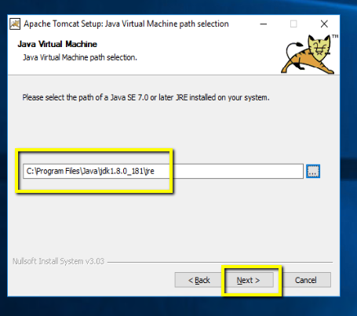
on the 6th page, change the destination folder to
E:\Tomcat Installs\Your Initials\Install Name. This path should match the
back half of the eCourt Homes directory. I.E. for a Test instance for RD, the eCourt home is:
E:\eCourt Homes\RD\Test
and the Tomcat install directory should be:
E:\Tomcat Installs\RD\test\
After changing the Destinication Folder, click Install.
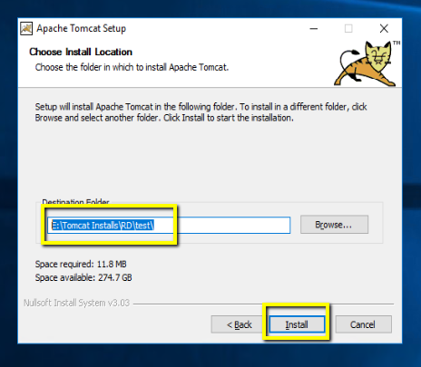After the install uncheck both the Run Apache Tomcat, and Show Readme options. Then hit finish.
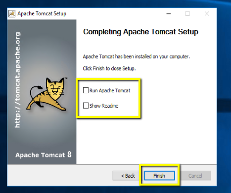Go to the newly installed tomcat instance at the folder you installed it in earlier. Enter the Bin folder
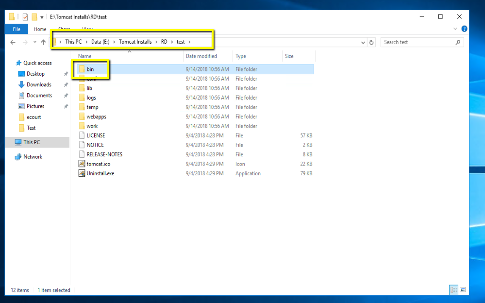Run the AppNamew.exe (replacing appname with your app name > I.E. RDTestw.exe
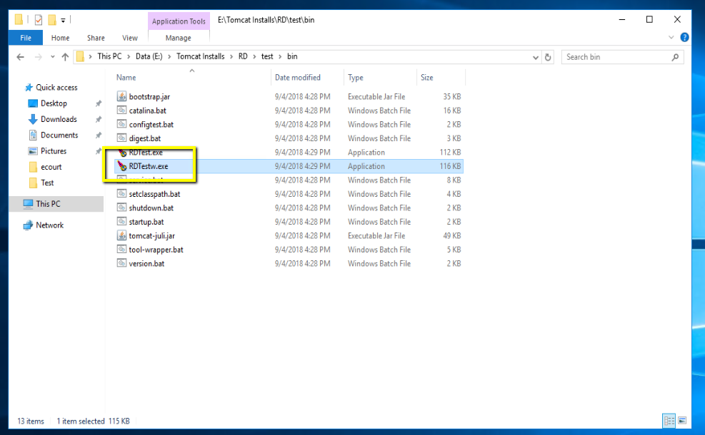On the Java tab, insert the following into the java options:
-Duser.home=E:\ecourt homes\Your Initials\Install Name
-XX:MaxPermSize=512m
-XX:+UseCompressedOops
-Dorg.apache.jasper.runtime.BodyContentImpl.LIMIT_BUFFER=true
-DLog4jContextSelector=org.apache.logging.log4j.core.async.AsyncLoggerContextSelector
Replacing Your initials and Install name with your initials and the name of your install. I.E. E:\ecourt homes\RD\Test
set the initial memory pool to 512 (1/2 a GB) and the Maximum memory pool to 2048 (2 GB).
Then click OK
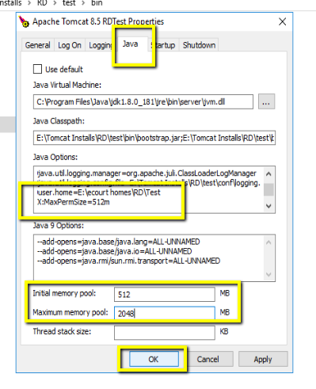If you're restoring a database, get the version off of the ecourt.tUPgradeRecord table via a SQL query, in SQL Server Management Studio (SSMS).
Donwload Query 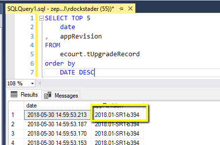Find the .war file that matches the version fromt he SQL Query on \\jove\Product_Development\eCourt\WarFiles
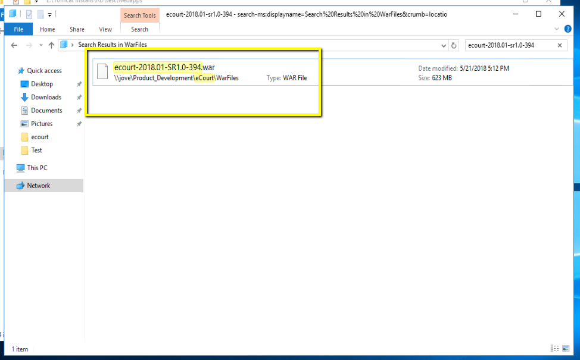copy the file to the webapps directory of your tomcat install, and rename it (generally sustain is the best choice here but you can name it whatever you'd like)
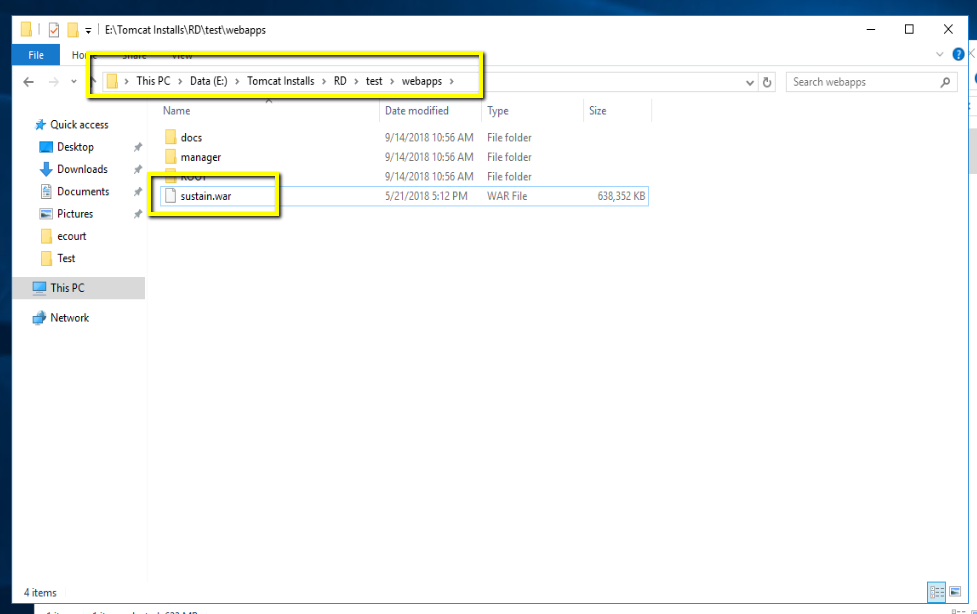Start the service
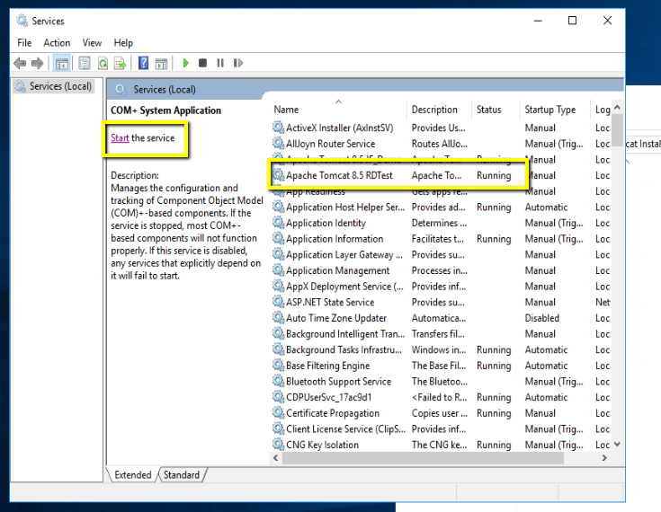